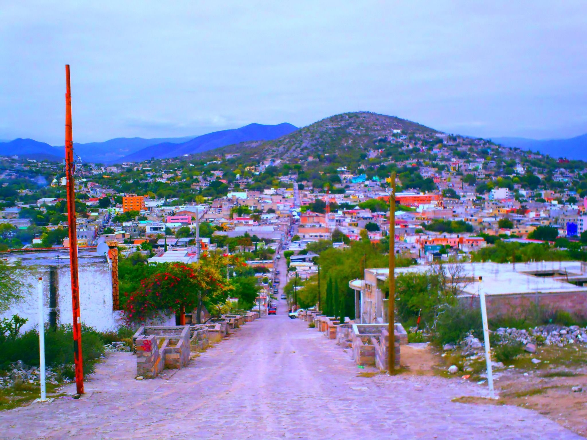

Ven y visita los mejores lugares en San Lui Potosi
Santa Maria del Rio
La huasteca
Cerritos

Haz click para descubrir mas
Haz click para descubrir mas
Haz click para descubrir mas
Pagina anterior
Pagina siguiente
2 paginas anteriores